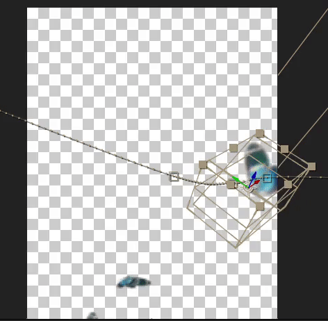

Hello, welcome to my portfolio
the gif is me learning video editing ^^
My name is Tiffany Chow, currently a Digital Media Art student at SJSU. Living most of my life in Taiwan, growing up in a conservative environment, I have a pretty heavy Asian cultural mindset, where schoolwork was what I only used to care about the most. However, when I was in middle school, I came across a lot of movies, cartoons, and western media that made me yearn for how fascinating that people put passion into the creative artwork that is not taught in school and to embrace my love for art. Now, I am here eager to learn more about how to put my passion for art into actual skills. I always feel comfortable drawing traditional and digital art, doing video editing work, and playing video games. During the pandemic, I explored a lot of different media, and I am currently really passionate about Adobe After Effects to make simple GIFs. I am interested in many things, oftentimes I learn them by watching Youtube, and then I share most of the work on Twitter(@glaucousblue) and Tumblr @pinkongrey). I always feel accomplished by doing the artwork myself. When learning the After Effects, I start from figuring out how the programs work, then spending three days doing a piece of editing work and finally finishing an edit faster, in around two hours of work time now. The learning process is one of my favorites, it let me understand the things I never explored, experience the different and unexpected things that can happen while working on a project. For example, my failure in coding leads me to find other programs to use, or I can use it as a glitch, a little pleasant surprise for my works. Most of the work is created with Sony Vegas, After Effects, Clip Studio Paint, MediBang Paint Pro, and SAI. From school, I got more access to Adobe, which I found they have such impressive functions and features. And some of those are currently applied in our art works. This indeed makes me want to learn more about Adobe Photoshop and Adobe Illustrator in the future. Currently, I am in the game development club, and I grow a lot of interest in Unity. Even though I am not professional enough in coding or designing games but our teamwork shows me a lot of amazing, creative works from other classmates. I understand more about coding because I am their artist. Group work in game design really inspired more of my creative ideas and hope someday I can host one of those projects and create my own game someday. As a person who is not good at using language to express myself properly, art is always what I hold on to the most. I wish to create captivating projects to express my ideas through my artwork. SJSU has provided the perfect program of combing digital media art into their course, It is really an Integration process and I wish to integrate more skill sets and technology into my work of art. Now, I am here eager to learn more about how to put my passion for art into actual skills.